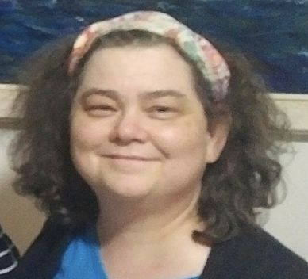

Dianne McMahon | WDD 130
Hello! My name is Dianne McMahon and I am from Canada. I am actually from it's capital city Ottawa. We have very cold winters and pretty hot summers. In Ottawa we have a lot of parks so we can see the change of the seasons by the change of the foliage. It is really quite pretty. I was baptized a member of the Church of Jesus Christ of Latter-day Saints over 30 years ago. I have served in many of the auxilliaries and have served a full time mission in Taiwan. I am grateful for the gospel in my life. I am looking forward to learning a lot in this course. I am excited to think I will have the tools to set up a web page. There is a lot to learn and it does seem very overwhelming right now. With help from my instructor, fellow collegues and from God, I feel fairly confident I can do this.